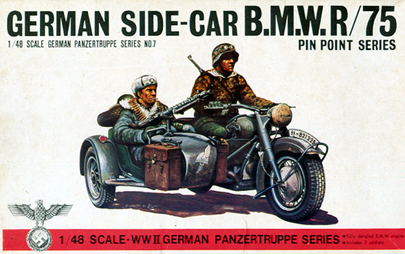
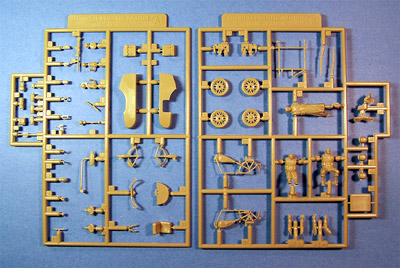
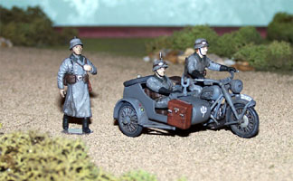
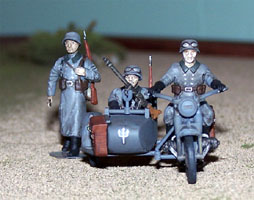
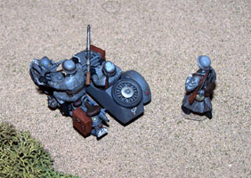

{kind=link}
{kind=link}
{kind=link}
{kind=link}


Bandai 1/48 BMW R/75 Motorcycle with Sidecar

Kit #8227
Collector’s Market Value $25.00
Images and text Copyright © 2005 by Matt Swan
Developmental Background
Even to this day the B.M.W. series of motorcycles win acclaim at cycle gatherings around the world and during the war years they served a crucial parts as did most civilian equipment. In the opening stages of World War 2 the German Motorcycle Corps played and active part and on every battle line the Mechanics Corp could be found utilizing this sturdy little stead for transportation of personnel and repair tools. One reason the B.M.W. motorcycles were so prevalent was that they were never considered a battle vehicle under the terms of the Treaty of Versailles and a good portion of German industry was diverted to developing the machine.
When the war began the Motorcycle Corps used the machines mobility to the greatest advantage and the bike proved itself to be dependable and rugged. The B.M.W. R/75 was an almost perfect machine with an engine exceeding 500cc and a sturdy frame it was used as a messenger and scout throughout the war and often had a sidecar attached and was equipped with the MG-34 machine gun. It saw service on virtually every front and as a testament to its survivability many are still in operation today and occasionally appear at motorcycle and car enthusiast gatherings around the world.
The Kit

Sadly this is a kit that has been lost to the manufacturing world. Bandai was well ahead of the times when they manufactured their 1/48 scale amour series in the 1970’s, many with detailed interiors and engine compartments. When many of these molds were lost at sea the kits that sat in warehouses around the world suddenly increased in value and this is one of those kits.
Packaged in a small box we have two trees of parts (click on image at right for a larger picture) that display excellent detail, little or no flash and minimal mold separation lines. There are no evident sink marks or injector pin marks. In the initial exam of the pieces the surface of the parts is nicely smooth; injector gates are as small as possible and located in logical places. The structure of the bike is such that the kick-stand is functional and the front forks are mobile when completed. While there are plenty of very small detail pieces the model builds up very nicely. Also included in the kit are three figures; one driver, one rider and a walking soldier. Each figure is provided several accessory pieces of equipment such as rifles, packs, shovels and canteens. Overall there are sixty three pieces done in a light tan, high pressure injection plastic.
Decals and instructions
As with most Bandai kits there is a small sheet of waterslide decals but with the passing of the years they have mostly been damaged beyond use. Where as the plastic parts in these kits are great for overall quality the decals generally are poor with poor print registry and color density. Also by this point in time they become extremely brittle and yellowed and even should you be able to lift them off the paper they usually just come apart right away.
The instruction sheet is a small three panel fold-out that includes a parts map followed by eight exploded view construction steps. Depending on the kit you find there is a fifty/fifty chance that the print will be in either English or Japanese. Either way the pictures are clear enough to be able to build the model without difficulty. The instructions also include a brief history of the motorcycle and some directions aimed at helping the modeler create a diorama.
Construction
This kit is a great diversion from my usual aircraft builds and is also great as a diorama piece. I started by removing the figures from the sprues then painting all the bike parts Panzer Dark Gray. The engine pieces were done with Steel then washed with black and dry brushed with silver. Tires were done with tire black, saddle bags with leather. Over about a three day period working a few hours at a time the bike was put together and the paint touched up. I did not assemble the figures until the bike was complete so that the arms and hands would be in the proper positions. Figures were painted with Uniform Gray, washed with a brown sludge wash then dry brushed with a lightened Uniform Gray. I salvaged the BMW logos from the kit decal sheet and all other markings came from the spares box. As much trouble as those three BMW logos gave me and being out of register as well I probably would have been better off printing new markings.
For three days of modeling diversion I had a great time and now have something very unusual for my aircraft dioramas.



You may click on the small images above to view larger pictures
Conclusions
Twenty five bucks may seem like a lot to pay for such a small kit but this is really a nice little build. The kit goes together without trouble, looks great when completed and is great to have in your collection either built or in the box. If you have a chance to pick up one of these rare little beauties by all means – do so.